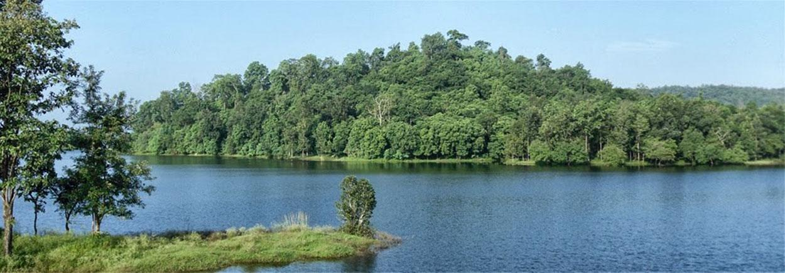
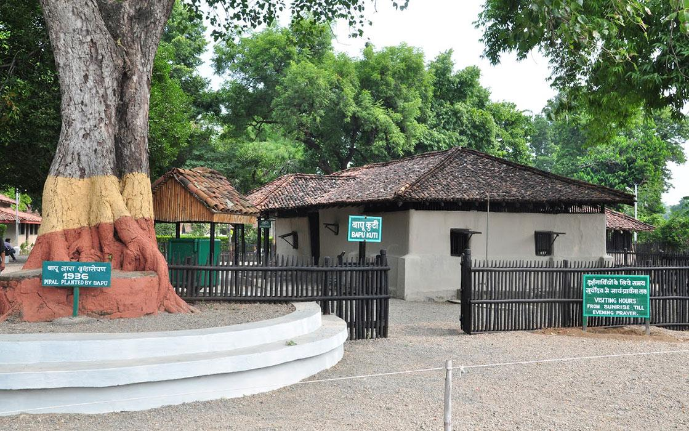
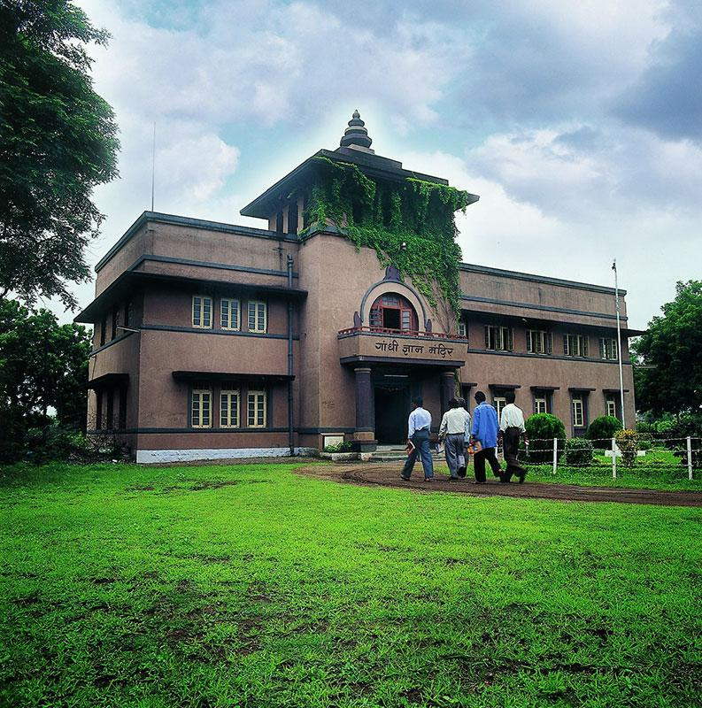
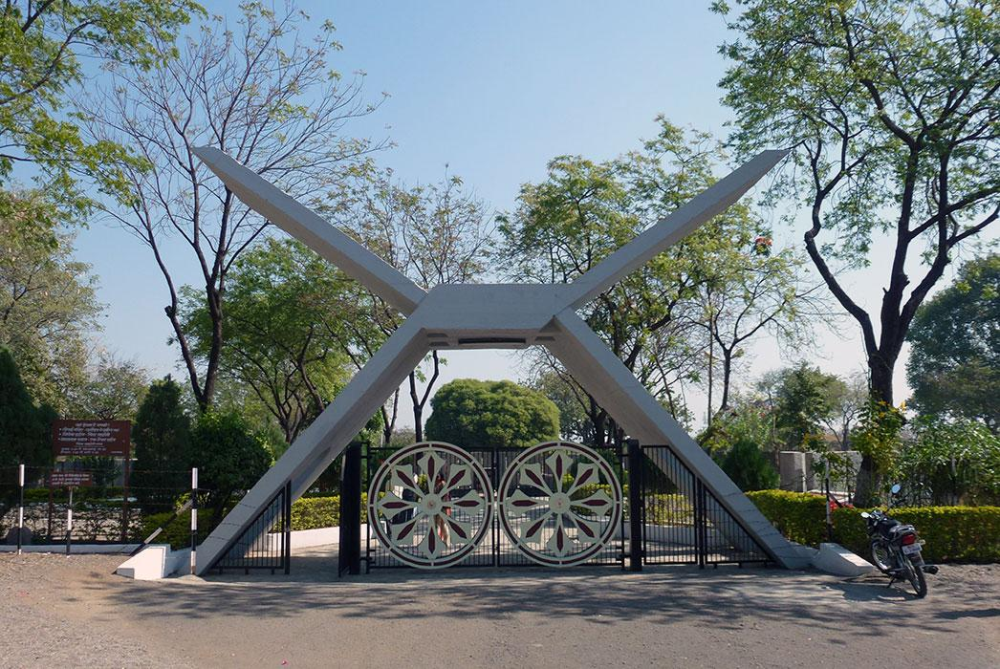
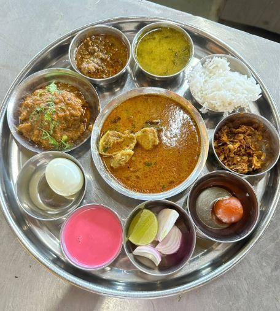
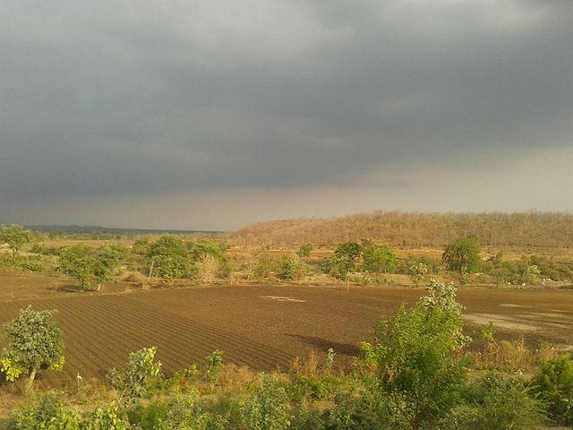
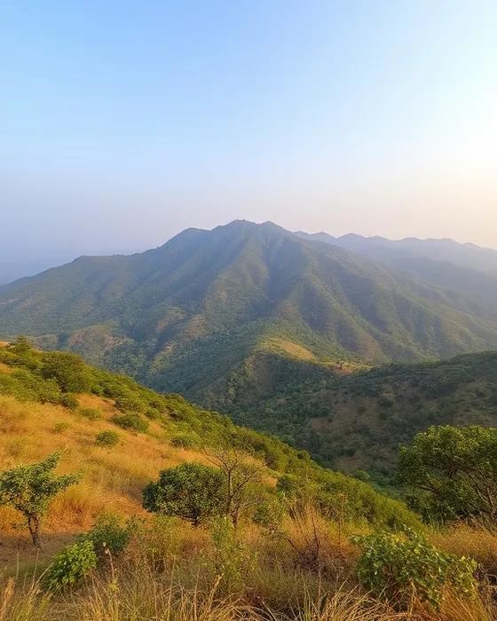
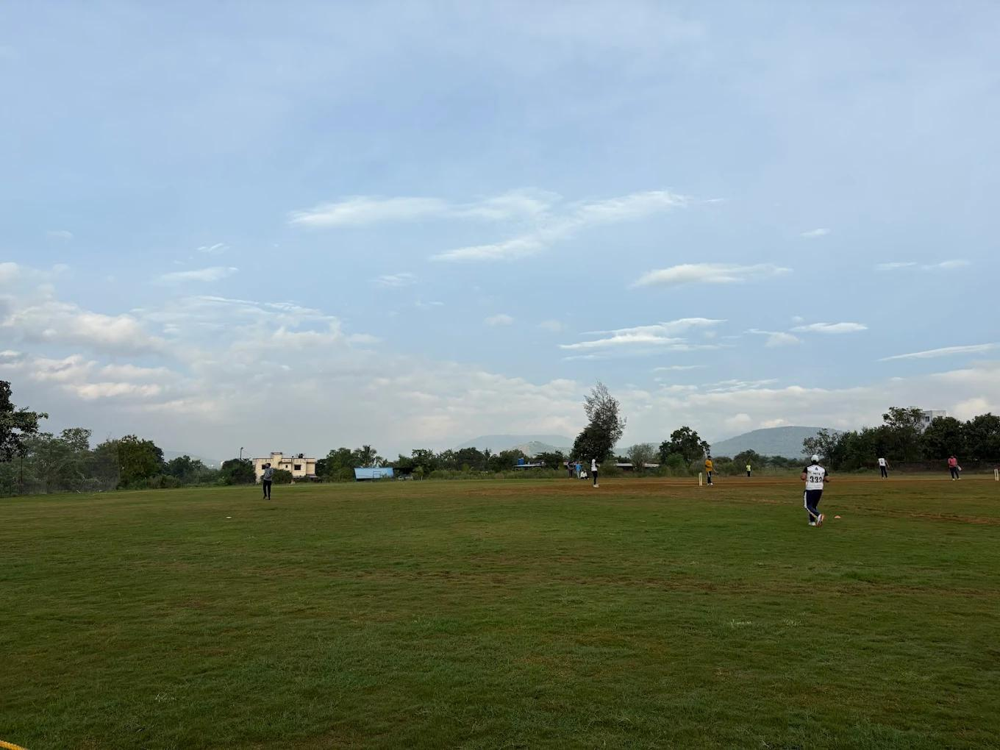

About

Situated in central India, Wardha is an administrative district known for its strategic location and historical significance. It is one of the pre-planned cities of British India. Originally a part of the Nagpur district, it was carved out in 1862 and has since evolved into a prominent educational, cultural, and industrial hub in the Vidarbha region.
- Location:Central India, in the Vidarbha region of Maharashtra, India.
- Famous as:The epicenter of India's freedom movement under Mahatma Gandhi, and a major hub for cotton trading.
History

Wardha holds a celebrated position in Indian history as the epicenter of Mahatma Gandhi's constructive work during the freedom struggle. In the 1930s and 1940s, it served as the de facto capital of the Indian freedom movement. Gandhi established his ashram at Sevagram in 1936, and it was here in Wardha that he proposed his revolutionary scheme of basic national education, emphasizing manual labor and handicrafts.
- Wardha is located in the central Vidarbha region of Maharashtra, India. It is globally famous as the historic epicenter of India's freedom struggle, where Mahatma Gandhi lived and worked at Sevagram Ashram. Today, it is also highly recognized as a major hub for cotton trading and a peaceful center for spiritual tourism.
Culture

The city boasts a diverse, multilingual, and secular cultural environment, with communities practicing Hinduism, Islam, Buddhism, Jainism, Christianity, and Sikhism living in harmony. Marathi serves as the primary language, alongside significant influences of Hindi, Gujarati, Marwari, and Punjabi. Traditional Maharashtrian festivals like Diwali, Holi, Ganesh Chaturthi, and Eid are celebrated with equal fervor across the district.
- Main Festivals:Ganesh Chaturthi, Diwali, Holi, and Eid.
- Traditional Arts:Khadi weaving, local pottery, and patriotic folk songs.
- Language:Marathi is the main language spoken by most people.
Tourism

The district draws history enthusiasts and spiritual seekers from all over the world. Key attractions include the Sevagram Ashram, the Vishwa Shanti Stupa, and Bapu Kuti, all of which reflect the Gandhian legacy. Other notable sites include the Geetai Mandir, a unique open-air temple where the verses of the Bhagavad Gita are inscribed on stone, and the scenic Gandhi Hill.
- Sevagram Ashram: Mahatma Gandhi's historic mud-hut home and freedom headquarters. Free entry, 9:00 AM – 6:00 PM.
- Vishwa Shanti Stupa: A large white peace pagoda with golden Buddha statues. Free entry, 5:00 PM – 6:00 PM.
- Gitai Mandir: A unique open-air temple made of stones carved with holy verses. Free entry, open until 6:00 PM.
Famous Food

Wardha’s culinary scene is heavily influenced by authentic Vidarbha cuisine. Locals and visitors enjoy spicy curries, predominantly Saoji dishes, alongside Maharashtrian staples like Pithla Bhakri, Sev Bhaji, and Thalipeeth. The city also features a variety of dining spots ranging from traditional eateries to popular local restaurants like Olive Restaurant and Indian Barbeque, serving a mix of Indian and continental cuisines.
- Famous Food:Saoji chicken and mutton curries, known for being very hot, rich, and heavily spiced.
- Local Specialty:Pithla Bhakri, a comforting meal made of thick chickpea flour curry served with sorghum flatbread.
Economy

The local economy is predominantly agrarian, with cotton being the primary cash crop, earning Wardha the title of an important cotton-producing center in Maharashtra. The region boasts a thriving textile industry, ginning and pressing factories, and oil mills. Additionally, there is a growing push toward agro-tourism and rural development, providing alternative income streams for local farmers and artisans.
- Key Industries:Cotton ginning, textile mills, and steel manufacturing plants.
- Main Crops:Cotton, soybeans, pigeon peas (tur dal), and sorghum (jowar).
Environment

Surrounded by the natural beauty of the Vidarbha plains, Wardha maintains a primarily rural and semi-urban environment interspersed with lush greenery. The local administration and residents focus on eco-tourism. Notable natural retreats include the Bor Wildlife Sanctuary and the Bordharan Dam, which provide excellent habitats for local flora, fauna, and migratory birds, offering residents a peaceful escape.
- Climate:Very hot, dry summers and pleasant, mild winters.
- Key Rivers:The Wardha River, the Yashoda River, and the Pothra River.
- Protected Areas:Bor Wildlife Sanctuary, a beautiful tiger reserve with rich plant and animal life.
Sports

Sports and fitness play a vibrant role in the community, with traditional Indian rural games like Lagori, Vitti-Dandu, and Bhovra being a prominent part of local culture. The city features several local stadiums, playgrounds, and sports stores, such as Modern Sports Agencies, which cater to the community's demand for team sports like cricket, football, and fitness training.
- Traditional Sports:Kabaddi, Kho-Kho, Lagori (seven stones), and Vitti-Dandu (gilli-danda).
- Focus:Boosting youth fitness, promoting rural talents, and hosting local school tournaments.